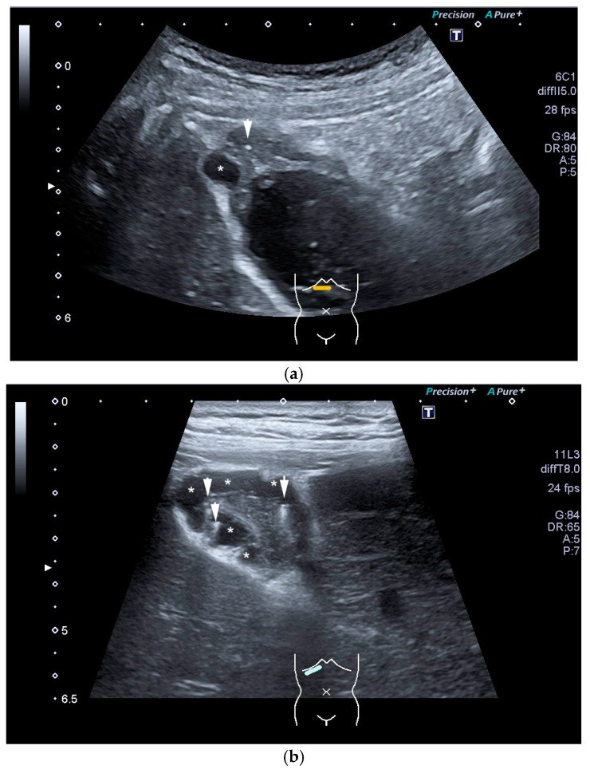
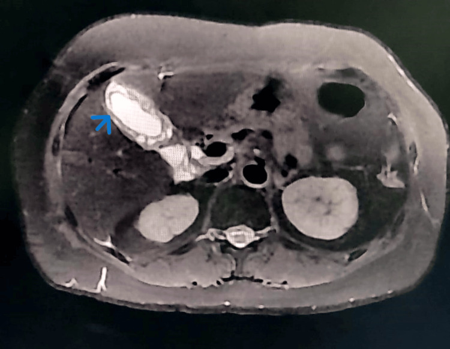
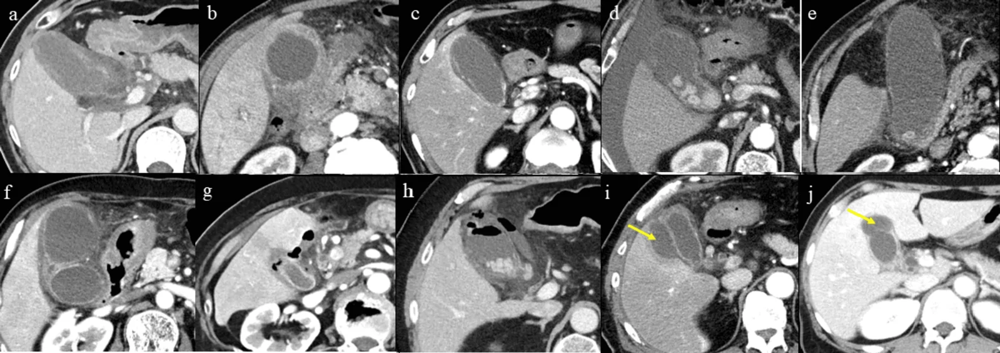
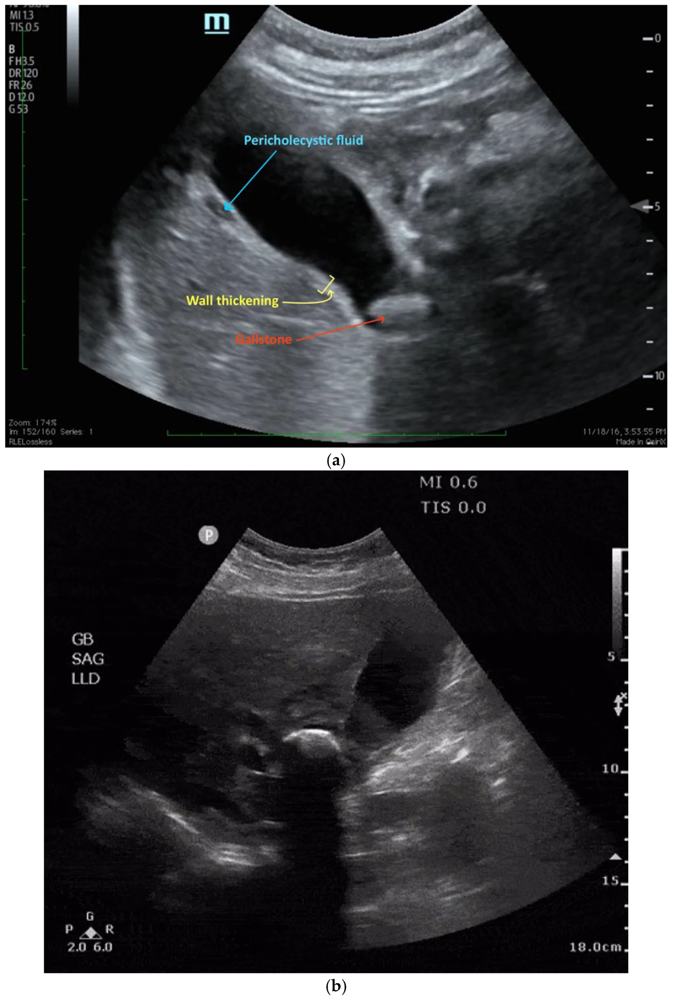
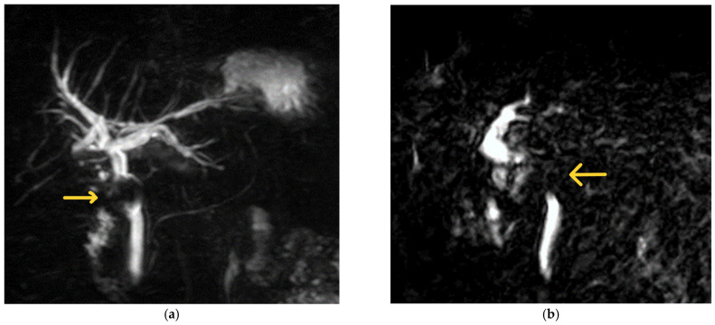
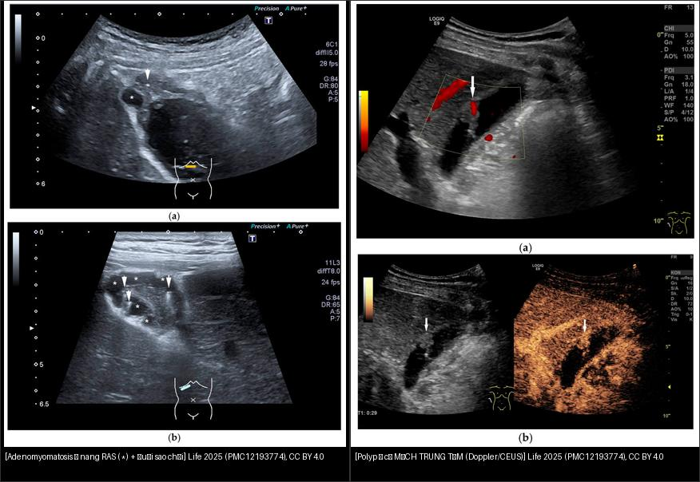
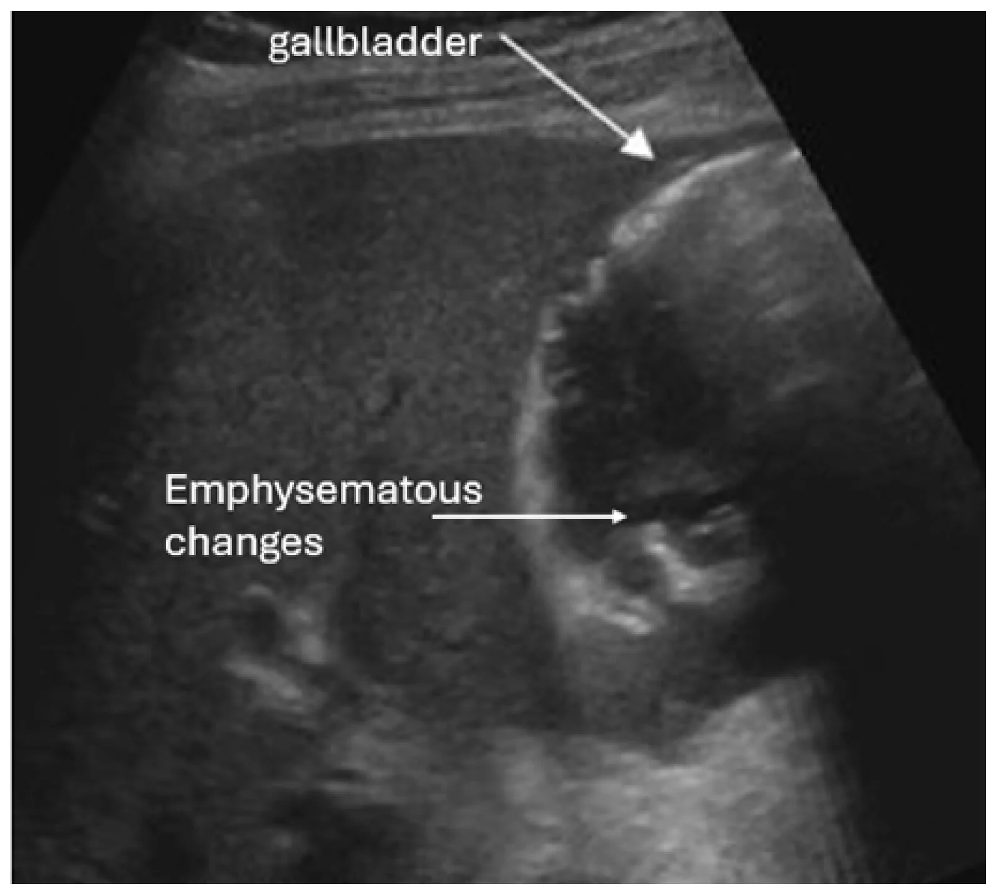

130 — Túi mật: sỏi, viêm cấp/mạn, adenomyomatosis vs K / Gallbladder
Tags: pattern:viem-tui-mat vung:tui-mat pattern:adenomyomatosis protocol:MRCP
Mức chắc chắn (certainty): tổng hợp y văn (literature synthesis) — nhóm tự biên từ y văn mở, chưa gắn ca nguyên văn đơn lẻ.
1. Tổng quan — 5 dấu CT + Murphy siêu âm
- Viêm túi mật cấp: sỏi kẹt cổ + thành dày ≥ 5 mm CT (siêu âm > 3 mm, Tokyo ≥ 3–4 mm) + túi căng (ngang > 4 cm, dài > 8–10 cm) + thâm nhiễm mỡ ≥ 5 mm + Murphy siêu âm (+) + dịch quanh.
- Sỏi cholesterol đồng tỷ trọng dịch mật (tàng hình CT!) vs sỏi sắc tố vôi hóa — TẠI SAO siêu âm/MRCP mới thấy sỏi cholesterol: CT chỉ thấy vôi.
- Ống mật chủ (CBD) thường < 6–7 mm (+ 1 mm mỗi thập kỷ sau 60 tuổi; sau cắt túi mật tới 8–10 mm còn chấp nhận) — TẠI SAO giãn sinh lý theo tuổi/mất túi: mất bể chứa + giảm đàn hồi.
- 5 dấu CT nặng (Tabuchi): dày ≥ 5 mm, kém ngấm thành, mỡ ≥ 5 mm, khí trong thành/lòng, áp-xe quanh — càng nhiều điểm càng khó mổ.
- Adenomyomatosis: dày thành + nang Rokitansky-Aschoff + đuôi sao chổi (comet-tail) siêu âm — lành tính, đừng mổ oan. Cạm bẫy MRI: các nang RAS có thể hạn chế khuếch tán (tối DWI) → dễ nhầm ác; chìa khóa là bờ nhẵn + nang trong thành + không khối thực.

Siêu âm (a,b): dày thành đáy túi mật + nang trong thành () + vi tinh thể cholesterol (mũi tên) tạo đuôi sao chổi. Life 2025, PMC12193774, CC BY 4.0.*
T2 axial: dày thành túi mật chu vi + nhiều nang nhỏ trong thành (mũi tên xanh) + hạn chế khuếch tán. Cureus 2024, PMC11585340, CC BY 4.0.- K túi mật: khối thay thế túi mật + xâm lấn gan/đường mật + hạch — mổ rộng khi còn khu trú.
- Khí trong thành/túi (emphysematous cholecystitis): vi khuẩn sinh hơi (thường đái tháo đường), khí hình ảnh giả "dày thành" — biến chứng nặng, mổ cấp cứu.

Dày ≥ 5 mm + kém ngấm + mỡ ≥ 5 mm + khí + áp-xe. Nguồn: Tabuchi et al., Cureus 2026 Fig. 1, CC BY 4.0.2. Gamut dày thành túi mật
- Viêm cấp sỏi: sỏi cổ + dày + Murphy + sốt — mổ trong 72 giờ (vàng) hoặc dẫn lưu khi quá nặng.
- Hoại thư/khí: khí thành + kém ngấm + nhiễm trùng nặng — mổ cấp cứu.
- Adenomyomatosis: đuôi sao chổi + không viêm cấp — theo dõi.
- Polyp thật: cố định vị trí, có mạch trung tâm (± ngấm CEUS) — phân biệt với sỏi/bùn (sludge) di động.
- K túi mật: khối + xâm lấn + hạch + sụt cân — mổ rộng/PET.
- Dày thành KHÔNG do túi mật (toàn thân): suy tim, xơ gan/tăng áp cửa, viêm gan virus, giảm albumin — dày lan tỏa, không Murphy, không sỏi.

Siêu âm: dịch quanh túi mật (pericholecystic fluid) + dày thành + sỏi kẹt cổ. Diagnostics 2026, PMC13605488, CC BY 4.0.- Mirizzi: sỏi kẹt ống túi mật/hạch cổ túi mật đè OMC → vàng da + hẹp OMC trên sỏi (đừng ERCP mù).

MRCP: khuyết thiếu (filling defect) ngay dưới hợp lưu ống gan (mũi tên) + giãn mật thượng nguồn = sỏi/hạch chèn ép (Mirizzi). Medicina 2023, PMC10818783, CC BY 4.0.3. Bảng so sánh
| Thực thể (entity) | Hình ảnh | Chốt vào (rule-in) | Chốt loại (rule-out) | Gợi ý xác nhận |
|---|---|---|---|---|
| Viêm cấp | Sỏi cổ + dày ≥ 5 mm + Murphy + mỡ | Đau HSP + sốt + Murphy + sỏi kẹt | Túi xẹp + không sỏi + Murphy (−) → dày thứ phát | Mổ sớm/dẫn lưu |
| Hoại thư/khí | Khí + kém ngấm + nặng | Khí thành + nhiễm trùng nặng | Khí trước (pneumobilia) → không phải khí thành | Mổ cấp cứu |
| Mirizzi/Bouveret | Sỏi kẹt ống túi mật ép OMC / sỏi to rò tá tràng gây tắc ruột | Vàng da + sỏi cổ + OMC trên hẹp; hơi + sỏi lạc chỗ tá tràng | Sỏi OMC đơn thuần → ERCP thường | Mổ (đừng ERCP mù Mirizzi!) |
| Adenomyomatosis | Đuôi sao chổi + nang RAS | Siêu âm chốt, không viêm | Khối + xâm lấn → K | Theo dõi |
| K túi mật | Khối + xâm lấn + hạch | Khối thay túi mật + sụt cân | Đuôi sao chổi → adeno | Mổ rộng/PET |
| Polyp thật | Khối cố định, ± mạch trung tâm (Doppler/CEUS) | Không di động khi đổi tư thế + có mạch nuôi | Sỏi/bùn di chuyển theo tư thế → không phải polyp | Theo dõi; ≥ 10 mm → cắt |
| Khí trong túi (emphysematous) | Khí trong thành/lòng + ĐTĐ | Khí + đái tháo đường + nhiễm trùng nặng | Khí trước (pneumobilia sau ERCP) → không phải khí thành | Mổ cấp cứu |
| Dày thành toàn thân | Dày lan tỏa, không sỏi, không Murphy | Bối cảnh suy tim/xơ gan/viêm gan/giảm albumin | Dày khu trú + sỏi + Murphy → viêm túi mật | Điều trị nguyên nhân |

Trái: adenomyomatosis — nang trong thành + đuôi sao chổi. Phải: polyp túi mật — khối có mạch trung tâm trên Doppler/CEUS. Cả hai Life 2025 (PMC12193774), CC BY 4.0. Ảnh ghép letterbox.4. Protocol
- Siêu âm đầu tay (Murphy + sỏi di động + dày thành + Doppler) — nhanh, không tia X.
- CT khi nặng/không rõ (5 dấu trên) + Tokyo grade (I/II/III) quyết định mổ/dẫn lưu.
- MRCP khi nghi sỏi OMC kèm.
5. Cạm bẫy
- Dày thành do suy tim/xơ gan/giảm albumin — toàn thân, không khu trú + không Murphy.
- Sỏi kẹt cổ không viêm (đau quặn mật) — cơn qua nhanh, không sốt/viêm.
- K túi mật giai đoạn sớm lẫn viêm mạn — khối khu trú + tuổi già + sỏi lâu năm → sinh thiết/mổ.
- Khoảng trống tín hiệu MRCP giả sỏi: bóng khí (pneumobilia — nổi phía trước theo trọng lực) + flow-void dịch mật + động mạch gan phải bắt chéo sau ống gan chung — sỏi thật luôn nằm thấp theo trọng lực + không đổi theo tư thế!
- Sỏi cholesterol tàng hình CT tưởng không sỏi — siêu âm bóng lưng + MRCP mới kết luận.
- Adenomyomatosis hạn chế khuếch tán trên MRI (nang RAS) giả ác — bờ nhẵn + nang trong thành + không khối thực là chìa khóa.
- Khí trong thành túi mật (emphysematous) dễ đọc nhầm là dày thành/khí tự do; hỏi đái tháo đường + bối cảnh nhiễm trùng nặng.
- Polyp vs sỏi/bùn: polyp cố định theo tư thế + có mạch trung tâm; sỏi/bùn di chuyển, có bóng lưng/không mạch.
- Dày thành do nguyên nhân toàn thân (suy tim/xơ gan/viêm gan) đừng mổ túi mật — dày lan tỏa, không sỏi, không Murphy.
6. Tự lượng giá — Blind Quiz
Ca 1 — Đau HSP + sốt + Murphy (+). Đếm dấu CT nặng.
- Hỏi: kể 5 dấu? Ca này mổ nội soi thường hay khó? Vì sao?
Bấm để hiện đáp án
- 5 dấu: dày ≥ 5 mm, kém ngấm, mỡ ≥ 5 mm, khí, áp-xe — càng nhiều điểm càng khó (mổ mở/dẫn lưu khi nặng + ASA cao + CRP cao).
- Nguồn: Tabuchi et al., Fig. 1, CC BY 4.0.
Ca 2 — Dày thành + đuôi sao chổi + không sốt/Murphy: viêm hay adenomyomatosis? Mổ không? (Bảng mục 3.)
Bấm để hiện đáp án
- Adenomyomatosis: nang Rokitansky-Aschoff trong thành + đuôi sao chổi → theo dõi, không mổ.
- Nguồn: Life 2025 (PMC12193774), CC BY 4.0.
Ca 3 — Hai bệnh nhân: bên nào là adenomyomatosis, bên nào là polyp thật? Bên nào cần cắt?
Bấm để hiện đáp án
- Trái — adenomyomatosis: nang trong thành + đuôi sao chổi → lành, theo dõi. Phải — polyp thật: khối có mạch trung tâm (Doppler/CEUS), cố định theo tư thế → theo dõi, cắt nếu ≥ 10 mm / có nguy cơ.
- Chốt: polyp có mạch nuôi + cố định; sỏi/bùn di động, không mạch. Nguồn: PMC12193774, CC BY 4.0.
Ca 4 — Vàng da + sỏi cổ túi mật + hẹp OMC trên sỏi. MRCP có khuyết thiếu dưới hợp lưu:
Bấm để hiện đáp án
- Findings: khuyết thiếu (filling defect) ngay dưới hợp lưu + giãn mật thượng nguồn → Mirizzi (sỏi kẹt ống túi mật đè OMC).
- Xử trí: mổ (không ERCP mù — nguy cơ tổn thương OMC). Nguồn: Medicina 2023 (PMC10818783), CC BY 4.0.
Ca 5 — Đau HSP + sốt + đái tháo đường, siêu âm thấy khí trong thành túi mật:

Bấm để hiện đáp án
- Viêm túi mật sinh hơi (emphysematous cholecystitis): bóng khí trong thành/lòng (mũi tên "emphysematous changes"). Nguy cơ cao ở đái tháo đường → mổ cấp cứu.
- Nguồn: Diagnostics 2026 (PMC13605488), CC BY 4.0.
Bài liên quan chéo
- 100 – Tổng quan hệ Bụng
- 131 – Tắc mật (đã có) (sỏi OMC)
- 132 – Hẹp đường mật không xác định & cholangioscopy (đã có) (bước tiếp theo của hẹp không rõ bản chất)
- 136 – U/nang tụy (đã có) (vàng da tắc mật)
Không dùng để chẩn đoán độc lập khi chưa có người hướng dẫn.